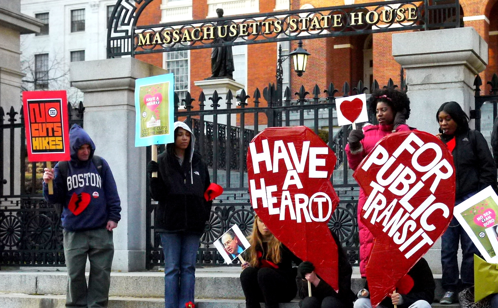

Professional planners often lack platforms for meaningfully engaging the public around transit projects. The complexities of transit networks have traditionally made it difficult to move beyond public hearings with pre-generated, static maps and abstract claims about "travel time savings" of different scenarios. Without ways of relating these scenarios to users' everyday experience, members of the community and grassroots groups, even natural allies of transit, often turn against projects.
What if there were interactive platforms to help planners and the public better understand the spatial impacts of transit? How could such platforms enable co-creation of transit corridors? We are exploring ways to maximize the positive impacts of emerging urban accessibility standards and practices by building them into innovative tools to transform stakeholder engagement for transit projects.
A basic proof-of-concept process built around open-source interactive mapping tools and data (see Open Trip Planner Analyst) was tested for BRT corridor planning with stakeholder groups in Boston and Santiago de Chile. More info.
With support from the Barr Foundation, a series of public workshops was conducted at the Roxbury Innovation Center in Fall, 2015.
The next phase of scaling up CoAXs is being supported by TransitCenter. More info soon.
(Client application for Open Trip Planner/Transport Analyst; Still a work in progress)
Try the Boston demoConsider the case of the Fairmount Line, a corridor for which advocacy groups have won some important initial upgrades and new stations. As they continue to build public support for first-class transit in this corridor, how can they work with MassDOT and MBTA planners to understand the benefits of frequent service and move from an Indigo Line on a map to real improvements in how residents can connect with opportunities?
The two maps below show travel times from the Talbot Avenue Station, with differing assumptions about how passengers arrive at stops (about which more below). "Scenario 1" in both maps excludes all Fairmount Line Service. "Scenario 2" in both maps includes current Fairmount Line Service. The blue areas can be reached more quickly in Scenario 2 (i.e. using the Fairmount Line) than in Scenario 1, while yellow areas are those for which the Fairmount Line does not provide an advantage.
We can start to get a sense of the effect of better Fairmount Line frequency by comparing different measures of accessibility. The left map (worst case/lower bound accessibility) is based on the assumption that passengers start their trip at the worst possible time, just missing a vehicle leaving the first stop. The right map (best case/upper bound accessibility) assumes that passengers time their access to the first stop to minimize waiting time at the stop. On average, travelers experience something in between these bounds. As frequency on the Fairmount Line increases from today's level, the lower bound will start moving up. With sufficiently good frequency on the Fairmount Line, it will approach the best case accessibility, saving up to 10-15 minutes for travelers heading downtown from Talbot Ave.
For more on how the best case and worst case are calculated, see these posts on Conveyal's blog.